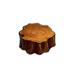

Получено: файл; исходный URL. Без перекодирования; при замене домена идентичность оригиналу не проверена, авторство не установлено. Страница: источник.
Секвойя
ВКонтакте; данные из ZOMBIA; 27 Июня 2011, 21:16- Тип
- нет данных
- Покупка
- нет данных
- Продажа
- нет данных
- Как получить
- [изображение: дровосек, зомби ферма, зомби мания, zombi.at.ua] Нарубить дровосеком [изображение: дровосек, зомби ферма, зомби мания, zombi.at.ua] Нарубить дровосеками (ВКонтакте, ZOMBIA; требует сверки).
- Применение
- нет данных
- Особенности
- нет данных
- Версия и дата
- ВКонтакте; данные из ZOMBIA; 27 Июня 2011, 21:16
Данные по источнику · ВКонтакте, ZOMBIA · 27 Июня 2011, 21:16; дата редакции не установлена
Предварительно: Данные одной исторической фанатской страницы; цифры и подписи изображений требуют сверки. Описание и условия сохранены по колонкам без додумывания.. Требуется сверка.
- Описание материала
- [изображение: Секвойя, зомби ферма, зомби мания, zombia.ru] Cеквойя 1000 Монет 2 Зомбакса Находится на: [изображение: зомби ферма, зомби мания]
- Участвует в строительстве
- нет текстовых данных; возможны неподписанные изображения
- Как достать
- [изображение: дровосек, зомби ферма, зомби мания, zombi.at.ua] Нарубить дровосеком [изображение: дровосек, зомби ферма, зомби мания, zombi.at.ua] Нарубить дровосеками
- Участвует в создании
- нет текстовых данных; возможны неподписанные изображения


Данные по источнику · браузерная версия; платформа не указана · дата редакции неизвестна
Предварительно: Подписи и последовательность пиктограмм перенесены без автоматического толкования. Названия, цены и направления стрелок требуют визуальной сверки; возможны ошибки самого сайта.. Требуется сверка.
- Колонка 1 в порядке пиктограмм
- [подпись: Секвойя; файл sekvoya.png] [подпись: Стоимость (Зомбаксов); файл zombucks.png] 2 [подпись: Продажа; файл moneta.png] 1000
- Колонка 2 в порядке пиктограмм
- [значок: proizvoditsya.png] [подпись: Дровосек; файл drovosek.png] [подпись: Пара Дровосеков; файл para_drovosekov.png] [значок: dobyvaetsya.png] [подпись: Остров Майя; файл ostrow_maya.png]
- Колонка 3 в порядке пиктограмм
- [значок: stroit.png] [подпись: Пирамида Майя; файл pyramida_maya.png]
- Колонка 4 в порядке пиктограмм
- [значок: sosdanie.png] [подпись: Брус секвойи; файл brus_sekvoyi.png] [значок: strelka.png] [подпись: Японский храм; файл yaponsky@20hram.png]
- Колонка 5 в порядке пиктограмм
Данные по источнику · браузерная Зомби Ферма / Зомби Мания; платформа требует проверки · дата URL не гарантирует дату редакции
Предварительно: Индивидуальная страница прочитана автоматически, подписи значков могут содержать ошибки; даты редакции и независимость от ЗомбиСити не установлены.. Требуется сверка.
- Основной блок страницы и подписи изображений
- Материал [иллюстрация: Секвойя] Секвойя Цена покупки: 2 [иллюстрация: Зомбаксы] Цена продажи: 1000 [иллюстрация: Монеты] Купить Секвойю за игровые ресурсы можно в Обменке Зомби Фермы Материал секвойя добывается из дерева Секвойи различных размеров. Не нужно путать Секвойю с Секвойей Чертовой - это разные деревья и ресурсы, похожие внешне, но имеющие различное применение. Секвойю можно получить за коллекцию: Тропическая коллекция [иллюстрация: Тропическая коллекция] Секвойю можно нарубить дровосеками или палочками на островах: Остров Майя [иллюстрация: Остров Майя] Остров Гигантов [иллюстрация: Остров Гигантов] Остров Веры [иллюстрация: Остров Веры] Остров Большой ёлк [иллюстрация: Остров Большой ёлки] Остров НЛО [иллюстрация: Остров НЛО] Остров Мечты [иллюстрация: Остров Мечты] Секвойя участвует в создании материалов: Бумага [иллюстрация: Бумага] = 3 Секвойя [иллюстрация: Секвойя] + 10 Капля воды [иллюстрация: Капля воды] [иллюстрация: Стрелка] Японский храм [иллюстрация: Японский храм] Брус секвойи [иллюстрация: Брус секвойи] = 3 Секвойя [иллюстрация: Секвойя] + 1 Шестерня [иллюстрация: Шестерня] [иллюстрация: Стрелка] Японский храм [иллюстрация: Японский храм] 5 Палочка-выручалочка [иллюстрация: Палочка-выручалочка] = 1 Фольга [иллюстрация: Фольга] + 1 Секвойя [иллюстрация: Секвойя] [иллюстрация: Стрелка] Серьёзный коттедж [иллюстрация: Серьёзный коттедж] Секвойю можно выиграть в рулетках: Зомби-фортуна [иллюстрация: Зомби-фортуна] Флаг Узбекистана [иллюстрация: Флаг Узбекистана] Флаг Испании [иллюстрация: Флаг Испании] Флаг Италии [иллюстрация: Флаг Италии] Флаг Нидерландов [иллюстрация: Флаг Нидерландов] Секвойю можно найти в сокровищах и ценностях: Связка бревен секвойи [иллюстрация: Связка бревен секвойи] Новогодняя елка [иллюстрация: Новогодняя елка] Веселая карусель [иллюстрация: Веселая карусель] Новогодняя елка за дубл [иллюстрация: Новогодняя елка за дублоны] Новогодняя елка за зб [иллюстрация: Новогодняя елка за зомбаксы] Чемодан [иллюстрация: Чемодан туриста] Секвойя участвует в создании построек: Шхуна [иллюстрация: Шхуна]
Связанные сущности
нет проверенных связей — требуется сверка.